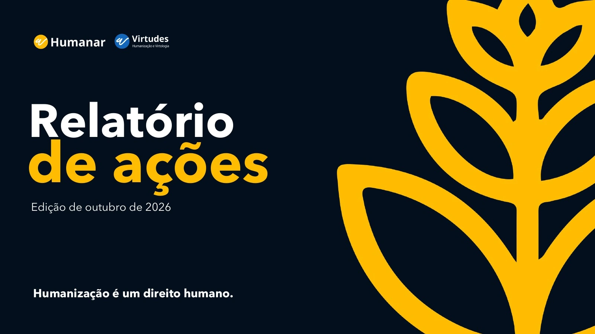

Relatório de ações
e cooperação
Apresentação institucional · Edição de outubro de 2026

de 90
Texto desta página
Arquivo PDF · 90 páginas · cerca de 51 MB. Os registros reúnem diferentes períodos da trajetória do Humanar.

Arquivo PDF · 90 páginas · cerca de 51 MB. Os registros reúnem diferentes períodos da trajetória do Humanar.